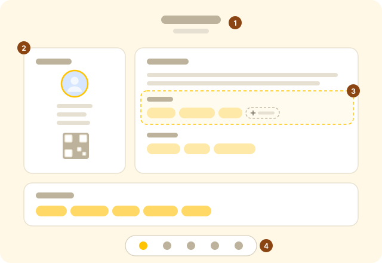
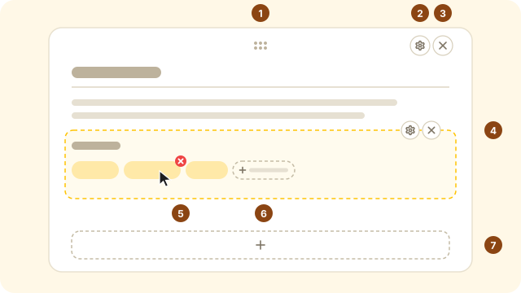
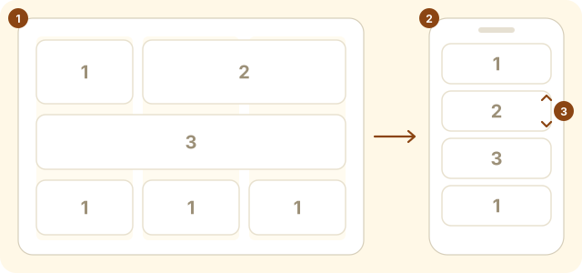
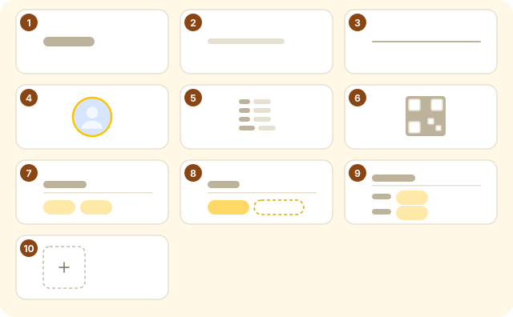
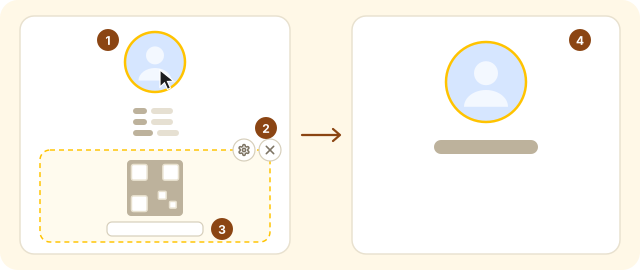
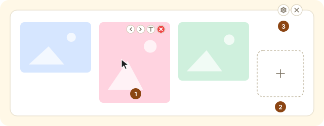
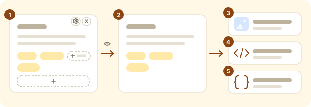
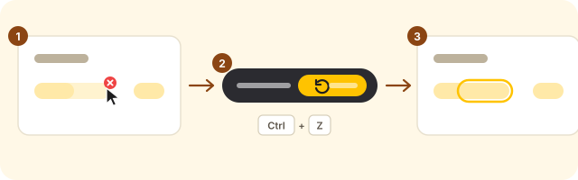

1Quick start
- Edit
Click any text to change it. Click the avatar or QR code to use your own. - Style
Open Customize at the bottom, pick a quick style, then fine-tune. - Share
Click Preview to check the result, then Export Image.

- Name and bio
- Cards: the page is made of cards
- Blocks: pieces of content inside a card (paragraph, tags…)
- Bottom toolbar: Add Card · AI Generate · Customize · Preview · More Settings
2The rules
Everything in the editor works the same way. Learn these once and you know the whole tool:
| To… | Do this |
|---|---|
| Edit text | Click the text. Selecting text shows a bold / italic / underline / strikethrough bar. |
| Change an image | Click the image (avatar, QR code, any picture in an image wall). |
| Change settings for a card or block | Hover it (tap it on a phone). A ⚙ appears in the top-right corner with width, color, position and more. |
| Delete | The × next to the ⚙. Tags, images and info rows have their own small × in their corner. |
| Add | Every add button is a dashed + Add… button. |
| Reorder | Cards and blocks: ⚙ → Move up / Move down. On a computer you can also drag a card by its ⠿ handle. |
| Undo a mistake | Deleting never asks for confirmation. Click Undo at the bottom or press Ctrl+Z (⌘+Z on Mac). |
| Change the overall look | Customize at the bottom. For a single card, use that card's ⚙. |
| See the final result | Preview hides every editing control. Press Esc to leave. |

- Drag handle (desktop only)
- ⚙ card settings
- × delete card
- A block’s own ⚙ and × (appear when you hover the block)
- Small × on tags, images and info rows
- + Add tag
- + Add block
3Cards
Adding a card
Click Add Card and pick a template. New cards appear at the bottom.
- Basic card (1 column), About me (2 columns), My faves (full width).
- Looking for: the kind of friends you want to meet.
- Boundaries: dealbreakers and social preferences.
- Image wall: several pictures in a grid.
- Profile info: three blocks (avatar, info list, QR code) that you can delete or adjust individually.
Card settings
A card’s ⚙ holds its width (1 / 2 / 3 columns), its own background color, left or center alignment, whether to show the title, and Move up / Move down.

- On desktop, cards sit in a 3-column grid and span 1, 2 or 3 columns (set in ⚙)
- On phones they stack into one column; the desktop layout is untouched
- On phones, reorder with Move up / Move down in ⚙
4Blocks & tags
Each card is made of blocks that you can combine and reorder freely. Click + Add block at the bottom of a card. The panel groups them into Text / Profile / Tags / Images, and each thumbnail shows exactly what gets inserted:

- Heading: one line of large text, e.g. your name (size in ⚙)
- Paragraph: free text
- Divider: solid, dashed or blank space
- Avatar: size and circle / rounded shape in ⚙
- Info list: rows like “Name: …”, “MBTI: …”
- QR code: from a link or an uploaded image
- Tags: heading plus tags
- My faves: faves plus a dashed “and more…”
- Grouped tags: two named tag groups
- Image wall: several pictures (starts with just an add box)
Tags
- Click + Add tag, type, press Enter. The box stays open so you can add several in a row. Press Esc or click elsewhere to finish.
- Pressing Enter to confirm a Chinese or Japanese input-method candidate will not add a half-typed tag.
- Click a tag to edit it. Hover it and use the small × to delete it.
5Avatar, QR code, image wall
Avatar, info list and QR code are separate blocks
The “Profile info” card is made of three blocks: Avatar, Info list and QR code. Each can be deleted, moved or adjusted on its own. Want a card with only your avatar and name? Delete the info list and QR code, then add a Heading block.
- Change the avatar: click it and pick an image. It is cropped to a square and compressed. Every avatar block shows the same avatar.
- QR code from a link: paste a link (QQ card, profile page…) into the box under the QR code.
- QR code from an image: for codes you can’t generate from a link (e.g. WeChat), click the QR code and upload your saved image. To switch back: the QR block’s ⚙ → QR code → From link.
- Don’t want the QR code / avatar: click the × in that block’s corner (undoable). To bring it back later: + Add block → Profile → QR code.

- Click the avatar or QR code to use your own image
- Delete blocks you don’t need with × (undoable)
- When generating the QR code from a link, paste it here
- Combine freely, e.g. keep just the avatar and add a heading
Image wall
- + Add images accepts several files at once.
- Click a picture to replace it. Hover it for ‹ › (reorder), T (caption) and × (delete).
- The block's ⚙ sets images per row (1–4) and Square crop, which keeps mixed aspect ratios tidy.

- Click a picture to replace it; hover for ‹ › reorder, T caption, × delete
- + Add images (select several at once)
- Block ⚙: images per row, square crop
6Appearance
Customize opens a side panel. Every change shows up live.
- Page background: solid, gradient or image
- Card color and opacity (lower it for frosted glass)
- Gap between cards
- Card padding
- Corner radius
- Quick styles: Classic, Glass, Minimal, Journal, Night. Start from the closest one.
- Theme & accent: the accent color tints tags and dividers. The Cyberpunk theme uses a fixed palette.
- Page background: theme default, solid color, gradient, or your own image (cover / contain / tile, with an optional overlay for readability).
- Cards: color, opacity (lower it for a frosted-glass look), corner radius, shadow, border, text color.
- Spacing & text: gaps between cards, card padding, line height, font size and font family.
- Show on page: turn the subtitle or footer off. The avatar and QR code are blocks; just delete them if you don’t need them.
7Preview & export
Preview hides every editing button, input and add button, so what you see is what gets exported. While previewing, the bottom bar offers quick exports.

- Editing: buttons everywhere
- Preview: every editing control hidden, same as the export
- Export Image (PNG)
- Export HTML page
- Export Config (JSON backup)
| Export | Best for |
|---|---|
| Export Image (PNG) | Posting to chats and social media. Always uses the 3-column desktop layout at 3× resolution. |
| Export HTML | A standalone web page you can host anywhere or open on a phone (it switches to one column on small screens). |
| Export Config (JSON) | Backups and moving to another device. Restore it with Import Config. |
Export, import and language are all under More Settings at the bottom.
8Undo
After deleting a card, block, tag, image or info row, and after importing, applying AI results or restoring the default, an undo prompt appears at the bottom:

- Delete: click the small ×, no confirmation
- An undo prompt appears; or press Ctrl+Z (⌘+Z on Mac)
- Restored exactly as it was
While you're typing, Ctrl+Z undoes your typing, as usual.
9AI generation
AI Generate asks you a few questions, chat-style, and builds the cards for you.
Getting an API key
- Recommended: Google Gemini (free). Open Google AI Studio, sign in, click “Create API key”, and paste it into the box in the AI panel.
- OpenAI, Anthropic or any OpenAI-compatible endpoint also work: click Use OpenAI / Anthropic / another endpoint in the panel (or the settings at its top-right). Custom endpoints must allow browser requests (CORS).
- Your key is stored only in your browser. Requests go straight to the provider, never through this site.
Chatting and generating
- The AI asks one or two questions at a time; just say “skip” to anything you’d rather not answer. It only uses what you told it and won’t invent your age, gender and so on.
- When you’re ready, click Generate Now. Next to it, choose Replace all (replace your cards and title) or Add to end (keep your cards and add the new ones after them).
- Not happy? Click Undo this generation in the panel, or use the undo prompt / Ctrl+Z.
- Closed the panel by accident? Reopen it in the same tab and the conversation is still there.
10Data & backups
- Your work is saved in this browser about half a second after each change. It won't follow you to another browser or device, and clearing browser data erases it. Use Export Config regularly as a backup.
- Import Config accepts files exported here and configurations from Tintro.
- Browser storage is limited to roughly 5 MB. Images are compressed, but if you add a lot of them a red "storage is full" bar may appear at the top. Remove some images, or use Download backup in that bar first.
- To start over: More Settings → Restore Default Template. It can be undone too.
11Shortcuts
| Keys | Action |
|---|---|
| Ctrl/⌘+Z | Undo deletions and other changes (undoes typing while you're in a text field) |
| Esc | Close dialogs, settings and the Customize panel; leave preview |
| Enter | Add a tag (keeps the box open for the next one) |
| Ctrl/⌘+B / I / U | Bold / italic / underline the selected text |
12FAQ
How do I reorder cards on my phone?
Tap the card, then use Move up / Move down in its ⚙. Dragging is turned off on phones so it can't mess up the desktop layout.
The avatar is blank in the exported image.
The default avatar is hosted on a third-party server that doesn't allow browsers to copy it into an image. Upload your own avatar and it will export fine.
I picked a font but nothing changed.
Decorative Chinese fonts load from the internet and can take a few seconds the first time. If your network blocks the font service, the system font is used instead.
Card colors don't work in the Cyberpunk theme.
Cyberpunk has a fixed card style. Switch back to the Default theme for full control over card colors.
Can other people see what I'm editing?
No. Your content stays in your own browser. Only images or pages you export and share are visible to others.
I only want an avatar (or only a heading), without the info list and QR code.
They are separate blocks: hover the info list or QR code and click × in its corner. For a heading, use + Add block → Heading.
How do I remove a card's title?
Open the card's ⚙ and turn off "Show title".